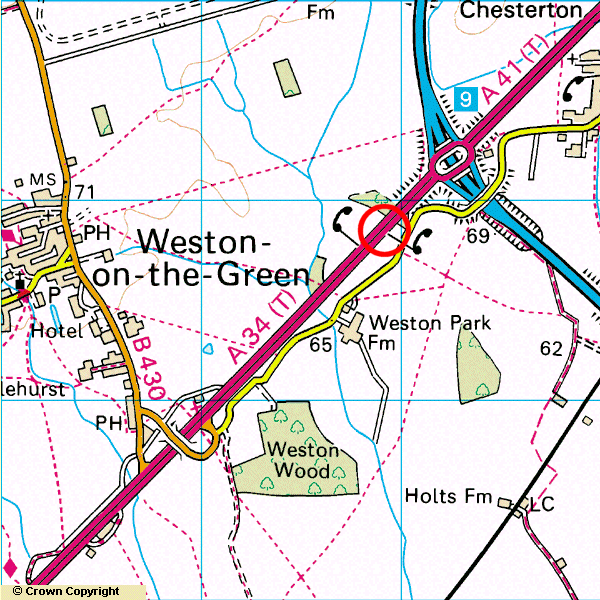

The blue road is the M40 and the red road is the A34 which has just passed Oxford. The A41 is heading towards Bicester. If you are travelling South down the M40 make sure you don't miss Junction 9 as the next Junction (number 8) is another 15 miles towards London. Come off the M40 at junction 9 and take the A34 turning off the roundabout. You will go down a steep sliproad and immediately on your left there will be a large lay-by. There is one either side of the road indicated on the map by the telephone symbols. It's the sort of lay-by lorry drivers park up in for the night and there is a verge between the lay-by and the main road. The meeting point is in the lay-by. Once you've met up to get back onto the M40 join the A34 Southbound. About 1km down the road there is a turning off. This will take you up over the A34 and down onto the Northbound side. Continue up the A34 until you reach the M40 junction.